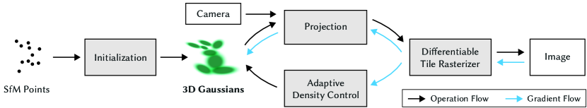

Paper analysis · SIGGRAPH 2023
3D Gaussian Splatting
for Real-Time Radiance Field Rendering
Kerbl, Kopanas, Leimkühler, Drettakis · arXiv:2308.04079
Method · overview
Optimize, then densify
Optimization starts from a sparse SfM point cloud and interleaves adaptive density control with gradient descent on the Gaussians.

Figure 2 — Optimization starts with the sparse SfM point cloud and creates a set of 3D Gaussians, then adaptively controls their density.
Representation
An ellipsoid is a scale, then a rotation
S
diagonal scale — how long the Gaussian is on each of its own axes
R
rotation — stored as a quaternion, so the ellipsoid can point anywhere
Rendering
The same ellipsoid, flattened to the image plane
W
viewing transform — world into camera coordinates
J
Jacobian of the projective transform, linearised about the splat centre
Result
Mip-NeRF360 quality, at 100+ FPS
Figure 5 — Comparisons to previous methods and ground truth from held-out test views.